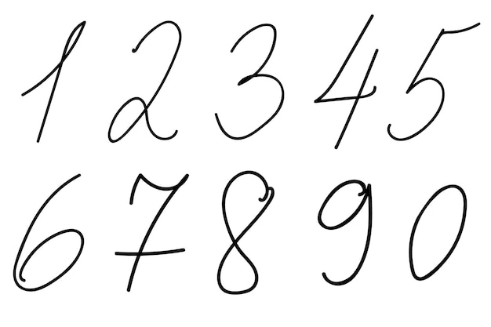

LABORATÓRIO · MINI CNN
Desenhe um dígito e abra cada etapa da classificação.
Quatro filtros percorrem uma imagem 12 × 12. Depois de ReLU e Max Pooling, uma camada Softmax aprende a reconhecer os dez dígitos.
12 × 12entrada→4 mapasconv 3 × 3→4 × 5 × 5pooling→10Softmax
Escopo didático: os quatro filtros são fixos para facilitar a visualização. O treinamento ajusta a camada densa. Em uma CNN completa, o backpropagation também aprende os valores dos filtros.
Exemplos de treinamento
Clique em um dígito para colocá-lo na entrada e visualizar suas características.
Entrada e probabilidades
O desenho é convertido em 12 × 12 intensidades entre 0 e 1.
classe prevista—treine a saída
Mapas depois de Convolução + ReLU
Branco significa ativação baixa; cores escuras indicam onde o filtro respondeu.
Vertical
Horizontal
Diagonal ↘
Diagonal ↙
Forward e treinamento, passo a passo
Abra um patch, a convolução, a ReLU, o pooling, a Softmax e a atualização.
Erro × resposta
Compare a cross-entropy normalizada com a acurácia sobre os dez exemplos-base.
loss normalizadaacurácia
Resultado para cada dígito
A confiança é a probabilidade Softmax da classe escolhida.

Da imagem para o dataset
Os dez recortes são reduzidos para 12 × 12. Deslocamentos de um pixel criam 50 exemplos simples. O MNIST completo possui 60 mil imagens de treino e 10 mil imagens de teste; este laboratório usa uma miniatura para expor todas as contas.
CÓDIGO DIDÁTICO
Convolução e Max Pooling com laços simples
Sem bibliotecas: cada produto pode ser localizado na imagem e no filtro.
convoluir()relu()maxPooling()softmax()treinarSaida()
// Percorre todas as posições válidas da imagem.
function convoluir(imagem, filtro) {
var mapa = [];
for (var linha = 0; linha < 10; linha++) {
mapa[linha] = [];
for (var coluna = 0; coluna < 10; coluna++) {
var soma = 0;
for (var r = 0; r < 3; r++) {
for (var c = 0; c < 3; c++) {
soma = soma + imagem[linha + r][coluna + c] * filtro[r][c];
}
}
mapa[linha][coluna] = Math.max(0, soma); // ReLU
}
}
return mapa;
}
// Resume cada bloco 2 × 2 mantendo a maior ativação.
function maxPooling(mapa) {
var saida = [];
for (var linha = 0; linha < 5; linha++) {
saida[linha] = [];
for (var coluna = 0; coluna < 5; coluna++) {
var maior = mapa[linha * 2][coluna * 2];
for (var r = 0; r < 2; r++) {
for (var c = 0; c < 2; c++) {
if (mapa[linha * 2 + r][coluna * 2 + c] > maior) maior = mapa[linha * 2 + r][coluna * 2 + c];
}
}
saida[linha][coluna] = maior;
}
}
return saida;
}